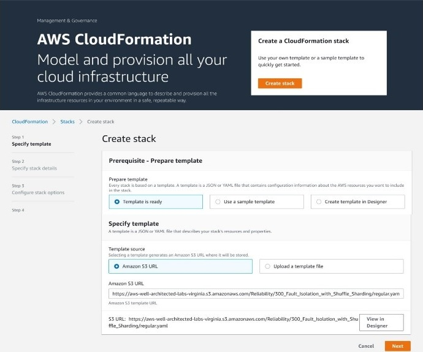

Fault Isolation With Shuffle Sharding
Fault Isolation With Shuffle Sharding; Shuffle sharding is simple, but powerful. It's even more powerful than we first realized. We've used it over and over, and it's become a core pattern that makes it possible for AWS to deliver cost-effective multi-tenant services that give each customer a single-tenant experience.
Create Stack

To begin, head to the AWS CloudFormation console and click on Create Stack.
https://aws-well-architected-labs- virginia.s3.amazonaws.com
/Reliability/300_Fault_Isolation_with_Shuffle_Sharding/regular.yaml
To be Continued...